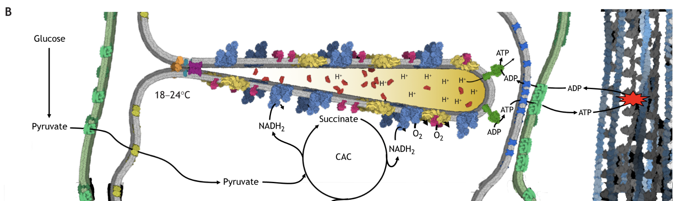
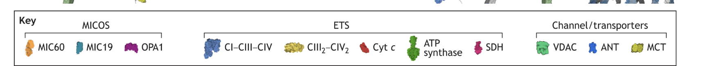

Dashed yellow paths show qualitative electron delivery through the assemblies. Red particles enter and enrich the crista lumen; cyan O₂ enters at CIV and water leaves. Green pulses follow ATP synthesis and exchange through ANT/VDAC. This remains an educational animation, not a kinetic model.
Panel key retained with the source context: MIC60, MIC19 and OPA1 at MICOS; CI–CIII–CIV, CIII₂–CIV₂, cytochrome c, ATP synthase and SDH in the ETS; and VDAC, ANT and MCT as channels/transporters.

Source context: JEB Figure 2. doi:10.1242/jeb.247432; Q-pool context: OROBOROS Q junction.